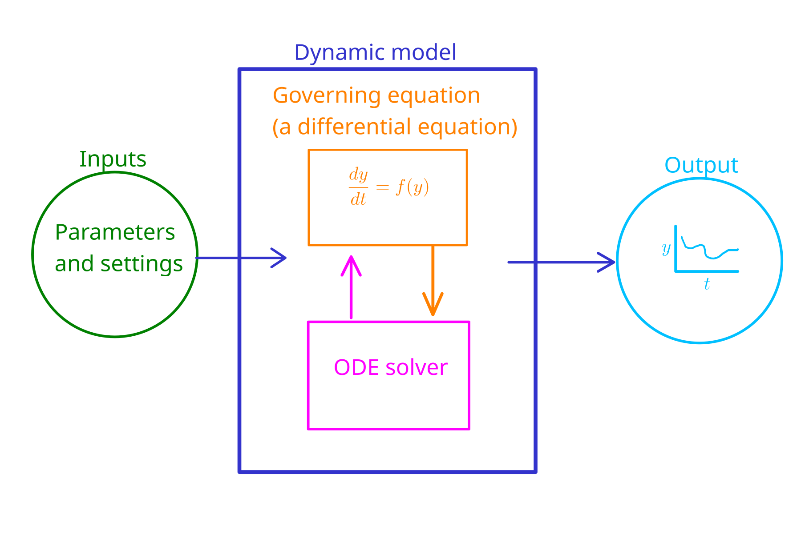
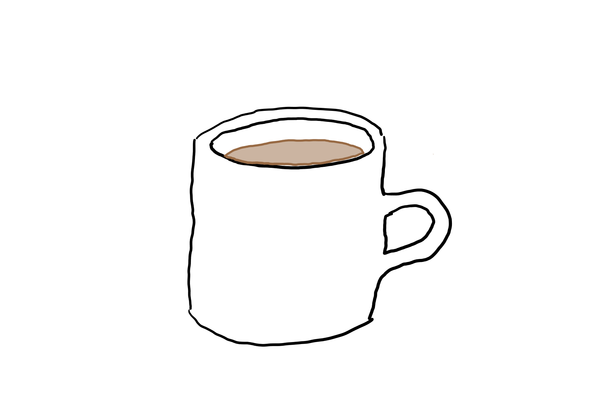
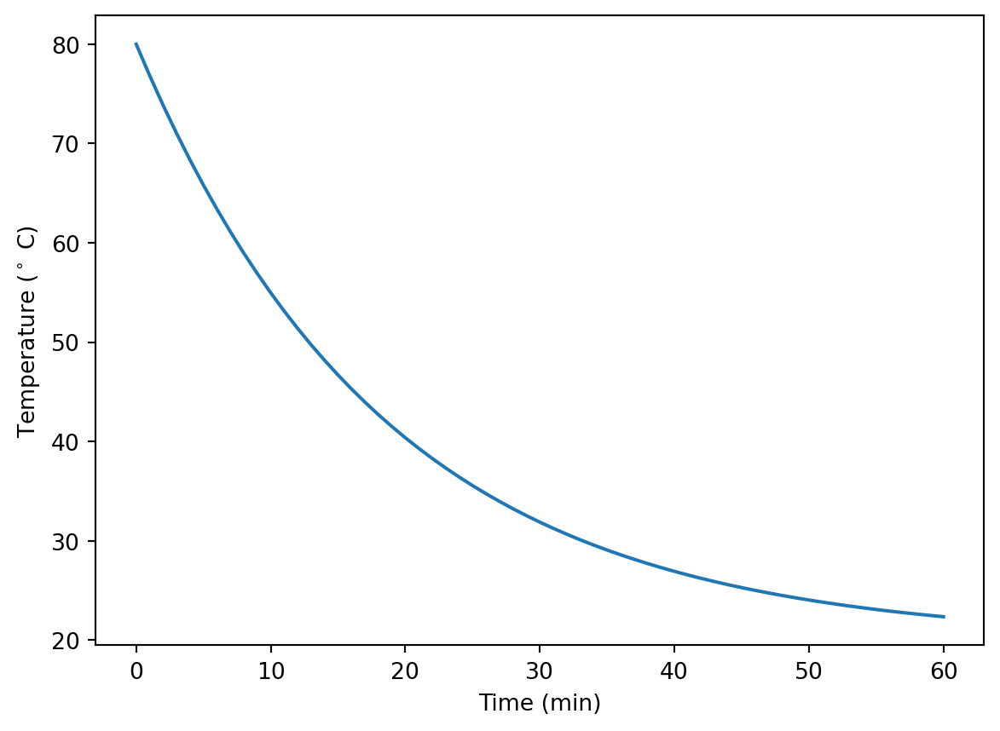
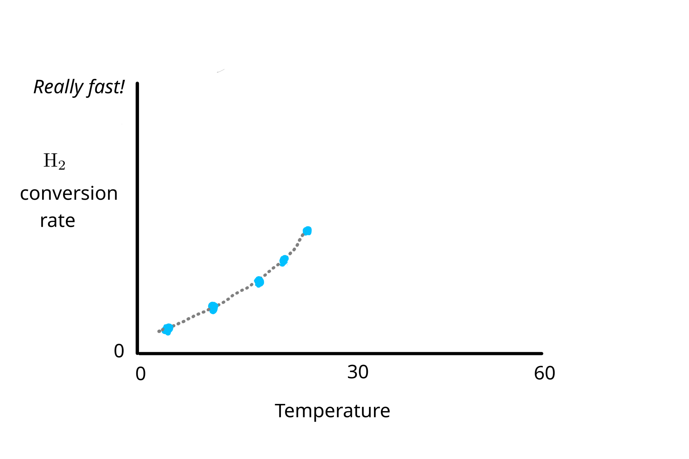
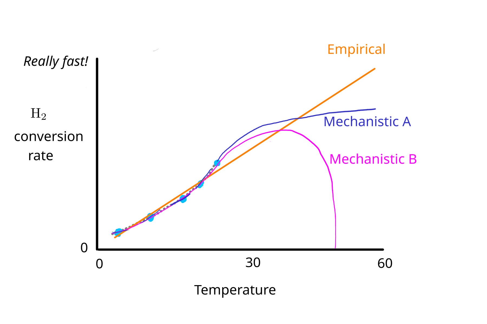
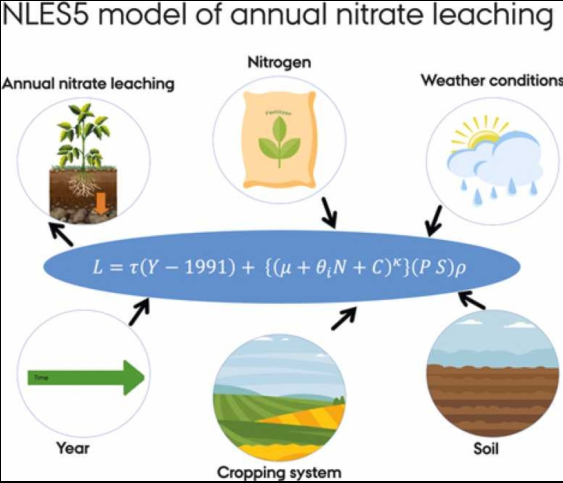
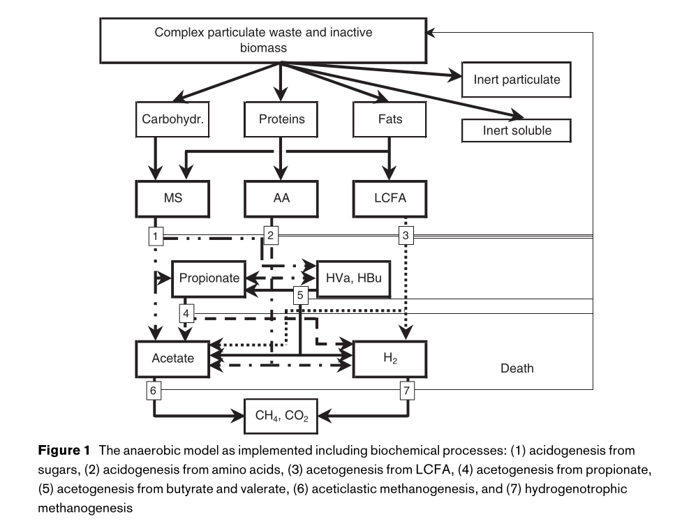

A model is a representation of a more complex real system. The term itself is quite general. In this book, we will focus on models that are simplified representations of physical, chemical, or biological systems.
Students in science and engineering might assume that a model means a piece of software or the underlying code. This can be the case, but is not the only meaning of the term. A software implementation of a model, i.e., some kind of a software program or script that can be run to make model predictions, is called a software model or computer model.
What are models used for? For several things. They are used to make useful predictions about the future. For example, national policy and international agreements on greenhouse gas emissions rely on sophisticated “general circulation models” of the atmosphere. These models are used to predict future climate under different input scenarios, including more or less greenhouse gases in the atmosphere.
In research, models are used for understanding complex systems, for example, microbial models are used to understand the effect of interactions between microbial populations, substrates, and products. Resulting knowledge can lead to new industrial processes. And in product development, models are used for design, for example, a heat transfer model might be used to size a heat exchanger system before it is built.
This chapter introduces some terms used in modeling and components of models (Section 1.1) and introduces models through a description of different types (Section 1.2).
1.1 Model components and terms
State variables, parameters, inputs. . . what do these terms mean? Vocabulary is a key part of a new topic, and modeling vocabulary is particularly tricky because terminology is not used consistently among different modeling fields. Fortunately the most basic terms are relatively universal, but this does not apply to all terms in this section.
The models that we deal with calculate something, and that something can be called the dependent variable or state variable. In a model of phosphorus pollution in a lake, the total phosphorus concentration or mass in the lake might be the state variable. Models can have more than one. You may also see the term independent variable used. For a dynamic model that describes how a dependent variable changes over time, time is the independent variable.
We can use the informal term model output for the value of the state variable under the specified conditions. Output from a computer model could include other, intermediate results, depending on what the programmer decided would be useful. For example, if parameter values are calculated in the model from inputs, it is good practice to return these so the user can check that they are realistic.
The term model inputs can then be used for everything that goes into a model. Below, we’ll work with a simple model for a cooling cup of coffee. Model inputs include the times for which the solution is desired, one or more physical constants that affect heat transfer, and an initial value of the state variable, coffee temperature.

Figure 1.1: Model terms and concepts for a dynamic model. In this model, \(y\) is the state variable (or dependent variable) and time \(t\) is the independent variable. It is a numerical model because an ODE solver is used to solve the governing equation.
There are different types of model inputs. Parameters are those constants that enter model equations. (The term can be confusing because in Python, “parameter” also refers to a placeholder name in a function’s definition. The actual objects or values in () in a function call are called arguments. This is consistent with C++ and other languages but not all programming languages!) Model parameters in the general sense might be a well-defined physical constant, like the specific heat capacity of some material, or the length of an object. In empirical models, parameters might be quantities without a clear physical interpretation. Heat or mass transfer coefficients are common model parameters that are in between these two extremes. Dynamic models need information on the initial conditions, which is another input. In the lake phosphorus model, the phosphorus concentration at the start of the simulation would be the initial condition. Additionally, some models may have input variables, like the water temperature in our hypothetical lake model. Input variables can even vary over time in some models. Lastly, computer models can also include settings that instruct the model how to run or how to return results. For example, in a dynamic model the times for which a solution is desired would be called a setting. In a one dimensional (1D) model, the spacing between the cells or nodes in a model grid is a setting.
Differential equations (DEs) are a core part of models. They describe exactly how a dependent (state) variable changes with respect to an independent variable, or even more than one independent variable. A dynamic model, which describes how a dependent variable changes over time is built around DEs with time as the independent variable. A DE taken with respect to only one independent variable is called an ordinary differential equation (ODE). If a derivative is taken with respect to more than one independent variable, e.g., both space and time in a 1D model, the DE is called a partial differential equation (PDE).
The distinction between independent variables, parameters, and other model inputs is important here. A state variable may depend on multiple model inputs, but only if the DE includes derivatives for multiple independent variables is it a PDE. For example, the lake phosphorus model could include effects of temperature and animal activity on the rate of change in phosphorus concentration, but if the fundamental DE used to develop the model only has the derivative of the state variable phosphorus with respect to time, i.e., \(\frac{dP}{dt} =...\), then it is an ODE, not a PDE. These other inputs can still show up on the right hand side (RHS) of the DE, but still, this would be an ODE. An example of a PDE is the heat diffusion equation, which, for a 1D model, would include two derivatives: \(\frac{\partial T}{\partial t}\) and \(\frac{\partial T}{\partial x}\).
The DE that sums up the behavior of the state variable in a model is called the governing equation (GE). During model forumulation, the objective is to develop a GE. But to actually get model output, it is then necessary to solve the GE. As described in some detail below (Section 1.2.2), this could be done with pencil and paper in an analytical approach, or with computing power in a numerical approach. The numerical approach relies on an algorithm or software function called an ODE solver. ODE solvers repeatedly evaluate the GE and numerically integrate to solve for the value of the state variable as a function of the independent variable(s).
The relationships among most of these terms are shown in Figure 1.1, which is a representation of a numerical dynamic model.
1.2 Types of models
There are multiple ways to group models, and the categories are useful for understanding, developing, and explaining models. The different classification groups are not exclusive, so a single model could for example be both a “lumped parameter” and an “analytical model”.
1.2.1 Conceptual, mathematical, and computer models
Conceptual, mathematical, and computer models are not really levels in a model classification scheme, but terms for the stage of model development. A conceptual model is some kind of qualitative description of a system. Conceptual models can be explained and summarized with the help of a good sketch. For example, let’s say we want to develop a model to describe how the coffee in a mug (Figure 1.2) cools over time.

Figure 1.2: A cooling cup of coffee, losing heat to the surrounding air.
Our conceptual model could be summarized in the sketch below (Figure 1.3).
Figure 1.3: Conceptual model of coffee cooling.
In our conceptual model there is some quantity of heat energy is present in the coffee and mug, and that amount determines its temperature. We know from experience that the coffee cools over time, meaning that heat energy is lost. In our model, the rate of heat loss depends on the temperature of the coffee and mug, the ambient temperature, and some heat transfer parameter. Our model does not explicitly include heat transfer within the coffee, or separate consideration of different routes of heat transfer, such as from the exposed coffee surface or through the wall or bottom of the mug. A conceptual model and a sketch is a good place to start most model formulation exercises.
Formulation of a mathematical model is typically the objective of a model formulation exercise. A mathematical model for our coffee example could be:
\[
\frac{dT}{dt} = - c \cdot (T - T_{air}).
\tag{1.1}\]
Equation 1.1 is actually a differential equation (DE) because it describes the rate of change in coffee temperature \(T\) over time. In particular, it is an ordinary differential equation (ODE) because it includes a single derivative with a single independent variable (time).
Equation 1.1 is also the governing equation or GE for this model, or that complete equation that describes the system. Governing equations typically need to be solved in order for a model to be useful. In some cases a solution can be found using only mathematical tools and expressed as a simple closed-form equation. Equation 1.1 is one such example, and a solution is:
# Import modulesimport numpy as npimport matplotlib.pyplot as plt# Times, up to 60 min (s)times = np.arange(0, 61, 1) *60# Initial condition (degrees C)Tc0 =80# Ambient temperatureTair =20# Set the constant that combines some variables and parametersc =9e-4# And the solutionTc = (Tc0 - Tair) * np.exp(-c * times) + Tair# Plot predictionsplt.plot(times /60, Tc)plt.xlabel('Time (min)')plt.ylabel(r'Temperature $(^\circ~\mathregular{C})$')plt.show()

We saw a computer model above. It is a piece of computer software that runs the model. Creating a computer model means implementing a mathematical model. We could also say that development of a software model means programming a mathematical model. Here is an implementation of the coffee model, i.e., a computer model for cooling coffee. Actually that code applies the model as well, carrying out the model calculation (the Tc = ... line) using specific values for input variables and parameters.
1.2.2 Analytical (closed-form) vs. numerical
The solution to the cooling coffee model above, Equation 1.2, is an example of an analytical or closed-form model. That means the model can be written as an equation that could be plugged into a calculator. The only part of Equation 1.2 that could not be solved with pencil and paper is the \(e^{()}\) bit, and that can be solved with a pocket calculator. Analytical solutions are great because they are easy to implement or program. The model solution is entered on a single line of code in the example above. They can also provide insight into model behavior at the mathematical model stage, without actually performing a single calculation. This is another major advantage of closed-form solutions. For example, Equation 1.2 tells us that \(T\) will start at \(T_0\) and drop toward \(T_{air}\), quickly at first but then more and more slowly. These inferences require some experience with symbolic mathematics.
So why not use only analytical solutions? Because it is not possible to derive an analytical solution in most cases. The GE in Equation 1.1 is a very simple ODE, and only simple ODEs can be solved analytically. In other cases, we will have to solve GEs numerically, without an explicit solution. Numerical solutions really take advantage of the power of computing and programming languages to arrive at a solution. Much of this book is focused on numerical models.
1.2.3 Lumped vs. distributed parameter (0D vs. 1D+)
Our coffee model is many things, including a lumped parameter model. Lumped parameter models do not explicitly include variation in the condition or state of the system (here our coffee and mug) over space. In it, we only consider a single “lumped” coffee + mug temperature \(T\). The name “lumped parameter” is a bit confusing because it isn’t model parameters that we are lumping, really.
What if we created a two-dimensional (2D) model that explicitly included the temperature profile over space? That means our model would predict not just a single temperature, but the temperature for multiple locations within the coffee and mug, as well as the effect that differences in temperature over space have on cooling. That would be a much more complicated model, and potentially more accurate, and would be called a distributed parameter model.
A partial differential equation is an example of a distributed parameter model, because it includes partial derivatives with respect to multiple independent variables, e.g., time and space.
1.2.4 Steady-state vs. dynamic
Our cooling coffee model is an example of a dynamic model, because it predicts the coffee temperature over time. But we won’t always need a dynamic model. For example, it is the steady-state performance of a reactor that usually matters, i.e., how it performs once it has started up and is running steadily. The steady-state condition for our coffee model is not very interesting, but the process of finding a steady-state solution, i.e., developing a steady-state model, is the same in more complex models. We start with the GE, set the time derivative to zero, and simplify:
\[
c \cdot (T - T_{air}) = 0,
\]
\[
T = T_{air}.
\tag{1.3}\]
Our steady-state solution shows that the coffee temperature will be the same as the air temperature at steady state. In other cases the steady-state solution is more interesting and useful.
1.2.5 Mechanistic versus empirical
Models that include a representation the underlying physics, chemistry, or biology are called mechanistic. Conversely, models based on simple relationship between inputs and outputs that is independent of the underlying mechanisms are called empirical. In reality, most models include some empirical components, and there is a continuum between the two categories. Let’s compare the two using a single concrete system.
In a biomethanation reactor hydrogen gas (\(\text{H}_2\)) is combined with carbon dioxide (\(\text{CO}_2\)) to form methane (\(\text{CH}_4\)) (Rafrafi, Laguillaumie, and Dumas (2021)). The rate of the reaction increases with temperature. So an empirical model could look like this, a simple equation:
\[
r = k_{T} \cdot T,
\tag{1.4}\]
where the reaction rate \(r\) could be in \(\gps\), temperature \(T\) in \(\degC\), and \(k_T\) is an empirical coefficient, determined from fitting to measurements. Some measurements might look like those shown in Figure 1.4.

Figure 1.4: Hypothetical measurements of biomethanation rate.
The empirical model could fit the measurements quite well, and would be very easy to implement.
In contrast to Equation 1.4, a mechanistic model for this system would be difficult or impossible to present as a single equation. The rate of the reaction might depend on the active methanogen biomass, and the concentrations of dissolved \(\ce{H2}\) and \(\ce{CO2}\). These reactant concentrations in turn depend on the solubility (from physical chemistry relationships) and flow rates. A mechanistic model could explicitly track all of these quantities as state variables. But even this model would have empirical components. For example, the rate of microbial activity is known to depend on temperature, but this response must be determined from measurements. So parameter values may be determined from fitting the model (or a simpler one) to measurements. This is a reminder that the empirical/mechanistic distinction is really a continuum.
Does the distinction matter much? It does. This simple empirical approach would break down if the system were changed in any substantial way. For example, even application of the model (Equation 1.4) to a larger reactor would almost certainly fail. Other effects could be caused by changes in gas flow rates. Extrapolation, or application of the model outside of the range of inputs that have been used for parameter estimation or validation, is risky for any model. But to the degree that a mechanistic model accurately reflects underlying processes, it is more likely to be accurate when used for extrapolation. Some possible responses are explored in Figure 1.5.

Figure 1.5: Hypothetical comparison between results from an empirical and two mechanistic models for the measurements from Figure 1.4. Mechanistic model A explicitly tracks available \(\ce{H2}\) and \(\ce{CO2}\) as state variables, and reaction rate levels off because flow rates of these reactants become limiting, while B also includes a plausible temperature response of the methanogen population.
1.2.6 Linear versus nonlinear models
A model is linear if it obeys the superposition principle: if you scale the inputs, the output scales by the same factor, and the response to a sum of inputs equals the sum of the individual responses. In practice, this comes down to one simple check: does the equation contain any state variable multiplied by itself, by another state variable, raised to a power other than 1, or passed through a nonlinear function (like sin, exp, or square root)? If no, the model is linear. If yes, it’s nonlinear.
For a system of ODEs a linear model can always be written in the form:
\[
y' = A \cdot y + b
\]
where A and b do not depend on y, but are allows to change with time (or another independent variable), just not with the state variables themselves. y is the state variable vector.
For example:
\[
\frac{dy}{dt} = -k \cdot y + f(t)
\] is linear - y appears only to the first power, and f(t) does not affect the linearity. However:
\[
\frac{dy}{dt} = -k \cdot y^{2}
\] is nonlinear, because y is squared. Similarly the models below are nonlinear:
Analytical solvability: linear ODE systems can often be solved using matrix methods as in the formulation above, whereas nonlinear systems generally needs to be solved with numerical methods.
Stability analysis: for linear systems, stability is determined globally, whereas for nonlinear systems stability must be assessed locally and in many places.
Predictability of combined effects: in linear systems you can analyze the effect of multiple inputs independently and sum the results. This is not the case for nonlinear systems.
1.3 Model simplification
Simplification is a key part of model development. You might have the feeling that the more processes and dimensions you can cram into a model, the more accurate and in general the better it is. That’s not true. Simplifications are in fact what make models useful, and without significant simplifications, many models would require too many inputs to ever be used.
It is true that models should include the essential processes and components in order to be accurate and useful. And it is also true that existing sophisticated models include many processes and components and generally increase in both complexity and accuracy as they are extended and refined over time. So do we have a bit of a contradiction here? Perhaps. But even the most sophisticated model is vastly simpler than the actual physical system it represents. And adding processes and components requires underlying math and associated parameter values. If either is uncertain, the accuracy of the model may not improve.
It is useful to remember that model complexity can and often does increase over time and as the result of contributions of multiple individuals. Good modeling advice is to start simple and add more complexity if necessary only after testing a model and identifying shortcomings.
How simple should a model be? That depends–on the objectives of a project or the task requirements, on available resources, on the level of understanding of the real system, and on the opinion of developers or others who have a say. In this book we’ll look at a variety of models that encompass a range of complexity. But in fact all of these models are relatively simple.
Problems
Model classification
Some different models are described below. Apply the labels conceptual, mathematical, computer, analytical, numerical, lumped parameter, distributed parameter, 1D, steady-state, dynamic, mechanistic, and empirical appropriately. Is the answer always clear?
The NLES5 model predicts nitrate leaching based on the equation shown in the figure below (Figure 1.6), where \(L\) is the predicted leaching rate and the other terms are input variables or model parameters. Is it mechanistic or empirical?

Figure 1.6: The NLES5 model, from Børgesen et al. (2022).
ADM1 is a chemical and biological model that simulates conversion of organic waste to biogas. It tracks development of microbial communities over time. Is it mechanistic or empirical? Dynamic or steady-state?

Figure 1.7: The ADM1 model, from Batstone et al. (2002).
The Gaussian plume model is a simple general approach for modeling dilution of atmospheric pollutants from a fixed source, e.g., a smokestack. It can be expressed as an equation for the concentration of pollutant,
\[
c(x, y, z) = e \cdot f(h, \sigma_y, \sigma_z) ,
\]
where \(e\) is pollutant emission rate, \(x\), \(y\), and \(z\) define a position relative to the source smokestack with a height of \(h\), and the \(\sigma\) terms are parameters determined from large-scale measurements that quantify horizontal and vertical dispersion. How would you characterize this model?
Other problems
A hypothetical geospatial water quality model used to predict nutrient concentrations dissolved oxygen in the river and estuary near a major urban location in Europe incorporates many assumptions, including uniform temperature and solute concentrations over the vertical dimension. The software tool is used to manage wastewater loading and help determine related governmental policy. A critic points out that measurements made by a university researcher show that vertical gradients in fact exist in the water profile, and therefore the model is invalid and should not be trusted. The agency applying the model counters that the developers have shown that the model is accurate. Who is right? Discuss.
A fellow student claims that analytical modelling is outdated and completely illogical in the age of cheap computing power. Do you agree? Explain.
Two competing models of ammonia emission from pig houses (barns) include an effect of temperature; increasing indoor temperature means more emission. Model A is completely empirical, where emission rate is a linear function of temperature, ventilation rate, and the total weight (mass) of pigs. Model B includes nitrogen input in feed, partitioning between growth and excretion, accumulation of manure, and finally volatilization based on physical chemistry and mass transfer theory, along with some empirical fudge factors. Which model is the better choice for predicting the emission response to new, higher temperatures resulting from climate change?
References
Batstone, D J, J Keller, I Angelidaki, S V Kalyuzhnyi, S G Pavlostathis, A Rozzi, W T M Sanders, H Siegrist, and V A Vavilin. 2002. “The IWA Anaerobic Digestion Model No 1 (ADM1).”Water Science and Technology: A Journal of the International Association on Water Pollution Research 45 (10): 65–73.
Børgesen, Christen D., Johannes WM Pullens, Jin Zhao, Gitte Blicher-Mathiesen, Peter Sørensen, and Jørgen E. Olesen. 2022. “NLES5 an Empirical Model for Estimating Nitrate Leaching from the Root Zone of Agricultural Land.”European Journal of Agronomy 134 (March): 126465. https://doi.org/10.1016/j.eja.2022.126465.
Rafrafi, Yan, Léa Laguillaumie, and Claire Dumas. 2021. “Biological Methanation of H2 and CO2 with Mixed Cultures: Current Advances, Hurdles and Challenges.”Waste and Biomass Valorization 12 (October): 5259–82. https://doi.org/10.1007/s12649-020-01283-z.